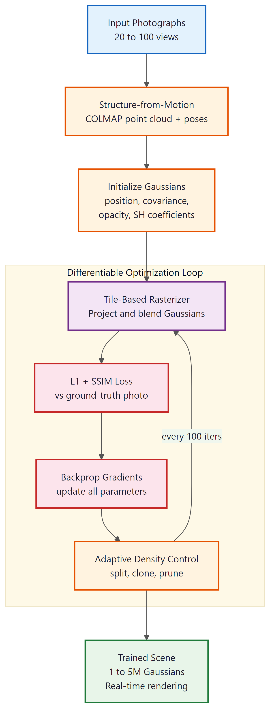

A photograph captures a single moment from a single viewpoint. A neural scene captures every moment from every viewpoint, and lets you walk through the memory.
Pixel, Dimensionally Greedy AI Agent
3D Gaussian Splatting (3DGS) represents a paradigm shift in neural 3D reconstruction. While Neural Radiance Fields (NeRFs) demonstrated that neural networks could synthesize photorealistic novel views of a scene, they required minutes of rendering time per frame due to expensive volumetric ray marching. 3DGS achieves comparable or superior visual quality at real-time frame rates (100+ FPS) by replacing the implicit neural field with millions of explicit 3D Gaussian primitives that are rasterized directly. This breakthrough has opened the door to practical applications in VR/AR, autonomous driving, medical imaging, and, most relevant to this textbook, integration with large language models for text-guided 3D scene generation and editing. This section covers the technical foundations, the rapidly evolving ecosystem of 3DGS extensions, and the emerging intersection with LLMs and vision-language models.
Prerequisites
This section builds on the image generation and vision-language model foundations from Section 26.1, particularly the discussion of diffusion models and CLIP embeddings. Familiarity with basic 3D geometry (camera matrices, point clouds) and the transformer architecture will help with the technical details, though the conceptual discussion is accessible without deep 3D vision experience.
26.7.1 From NeRFs to Gaussian Splatting
26.7.1.1 Neural Radiance Fields: A Brief Recap
Neural Radiance Fields (NeRFs), introduced by Mildenhall et al. in 2020, encode a 3D scene as a continuous function F(x, y, z, θ, φ) → (r, g, b, σ) that maps a 3D position and viewing direction to a color and density value. This function is parameterized by a multilayer perceptron (MLP). To render an image, a ray is cast from the camera through each pixel, and the MLP is queried at hundreds of sample points along each ray. The colors and densities are composited using volume rendering to produce the final pixel color.
The results were stunning: NeRFs could reconstruct scenes with fine geometric detail, specular reflections, and semi-transparent materials from as few as 20 to 100 input photographs. However, the approach suffered from three fundamental limitations:
- Rendering speed. Each pixel requires hundreds of MLP evaluations along its ray, making rendering painfully slow (seconds to minutes per frame on a high-end GPU).
- Training time. Optimizing the MLP typically requires hours of GPU time, even for a single scene.
- Scene editing. Because the scene is stored implicitly inside the network weights, there is no straightforward way to move, delete, or modify individual objects.
Subsequent work addressed these issues incrementally. Instant-NGP (Müller et al., 2022) introduced multi-resolution hash encoding to reduce training time from hours to minutes. Plenoxels (Fridovich-Keil et al., 2022) replaced the MLP with a sparse voxel grid, demonstrating that the neural network itself was not essential. These advances hinted at a deeper insight: explicit, optimizable 3D representations could match or exceed the quality of implicit neural fields while being dramatically faster to render.
26.7.1.2 The Gaussian Splatting Insight
3D Gaussian Splatting (Kerbl et al., 2023) takes this trend to its logical conclusion. Instead of representing a scene as a continuous field queried by ray marching, 3DGS represents it as a collection of millions of 3D Gaussian ellipsoids. Each Gaussian is defined by a small set of learnable parameters:
- Position (μ): the 3D center of the Gaussian (3 floats)
- Covariance (Σ): parameterized as a rotation quaternion (4 floats) and a 3D scale vector (3 floats), defining the shape and orientation of the ellipsoid
- Opacity (α): a scalar controlling transparency (1 float)
- Color: represented using spherical harmonics (SH) coefficients to capture view-dependent appearance (48 floats for degree-3 SH)
The total per-Gaussian storage is roughly 59 floats (about 236 bytes). A typical scene might contain 1 to 5 million Gaussians, yielding a raw representation size of 200 MB to 1 GB before compression.
A NeRF renders a scene by asking a neural network millions of tiny questions ("what color is this point from this angle?"). Gaussian Splatting skips the interrogation entirely and just throws paint blobs at the screen. The paint-blob approach turns out to be 1,000 times faster, which is either a triumph of simplicity or a humbling reminder that brute-force rasterization has been beating clever algorithms since the 1990s.
The critical advantage is the rendering algorithm. Rather than casting rays through the scene (as NeRFs do), 3DGS projects each Gaussian onto the image plane as a 2D splat and composites them front-to-back using alpha blending. This "splatting" operation maps naturally to the GPU rasterization pipeline, achieving 100+ FPS at 1080p resolution on consumer hardware. The speed difference is not incremental; it is a qualitative shift that makes interactive applications possible for the first time.
The fundamental difference between NeRFs and 3DGS mirrors a broader tension in deep learning between implicit and explicit representations. NeRFs store the scene implicitly in MLP weights: every query requires a forward pass through the network. 3DGS stores the scene explicitly as a point cloud of parameterized Gaussians: rendering requires only projection and sorting, with no neural network evaluation at render time. This makes 3DGS not just faster but fundamentally more compatible with traditional graphics pipelines, game engines, and real-time applications. The trade-off is memory: an implicit representation compresses the scene into a fixed-size network, while an explicit representation grows with scene complexity.
26.7.2 How 3D Gaussian Splatting Works

26.7.2.1 Initialization from Structure-from-Motion
Training a 3DGS model begins with a set of multi-view photographs of a scene, typically 50 to 300 images captured from different viewpoints. Before any optimization, a Structure-from-Motion (SfM) pipeline (usually COLMAP) processes these images to produce two outputs: (1) the camera poses (position and orientation) for each image, and (2) a sparse 3D point cloud of the scene. This sparse point cloud, typically containing 10,000 to 100,000 points, serves as the initial set of Gaussian centers.
Each initial Gaussian is placed at a point cloud location with a small isotropic covariance (a tiny sphere), random SH coefficients, and moderate opacity. The optimization process will grow, shrink, split, and merge these Gaussians to faithfully reconstruct the scene.
26.7.2.2 Differentiable Rasterization
The rendering process is fully differentiable, enabling end-to-end optimization with gradient descent. For each training image, the renderer:
- Projects each 3D Gaussian onto the 2D image plane using the known camera parameters, producing a 2D Gaussian splat.
- Tiles the image into small blocks (typically 16×16 pixels) and assigns each splat to the tiles it overlaps.
- Sorts the splats within each tile by depth (front to back).
- Composites the sorted splats using alpha blending: C = Σi ci αi ∏j<i(1 − αj), where ci is the color and αi is the effective opacity of the i-th splat at that pixel.
The rendered image is compared to the ground-truth photograph using a combination of L1 loss and a structural similarity (SSIM) loss. Gradients flow back through the rasterizer to update every Gaussian parameter: position, covariance, opacity, and SH coefficients.
26.7.2.3 Adaptive Density Control
A fixed number of Gaussians cannot capture scenes of varying complexity. 3DGS addresses this with an adaptive density control scheme that runs periodically during training (every 100 iterations by default):
- Densification (splitting). Gaussians with large positional gradients (indicating the optimizer is trying to move them significantly to cover under-reconstructed regions) are split into two smaller Gaussians. This increases resolution in areas that need more detail.
- Densification (cloning). Small Gaussians with large gradients are cloned (duplicated at a nearby position) rather than split, since they are already at an appropriate scale.
- Pruning. Gaussians whose opacity falls below a threshold (e.g., α < 0.005) are removed. Opacity is periodically reset to near-zero, forcing Gaussians to justify their existence by contributing meaningfully to the reconstruction.
This adaptive scheme allows the representation to grow organically: dense foliage might require millions of tiny Gaussians, while a flat wall needs only a few large ones. The final Gaussian count is scene-dependent and emerges from the optimization rather than being set a priori.
When training a 3DGS model, start with a high densification rate (every 100 iterations) and reduce it as training progresses. Under-densification produces blurry results in detailed regions; over-densification wastes memory on regions that a few large Gaussians could cover. Monitor the total Gaussian count during training: if it plateaus early, your densification thresholds may be too conservative.
26.7.2.4 Spherical Harmonics for View-Dependent Color
Real-world surfaces exhibit view-dependent appearance: a glossy table reflects light differently depending on where you stand. 3DGS captures this by representing color not as a single RGB value but as a set of spherical harmonics (SH) coefficients. SH functions form a basis for representing functions on the sphere, analogous to how Fourier series represent functions on the line.
Each Gaussian stores SH coefficients up to a configurable degree (typically degree 3, giving 16 coefficients per color channel, or 48 floats total). When rendering, the SH function is evaluated using the viewing direction to produce the final RGB color for that Gaussian from the current viewpoint. Degree-0 SH corresponds to a constant (diffuse) color; higher degrees capture increasingly sharp specular reflections. This representation is compact, differentiable, and computationally cheap to evaluate.
# Spherical harmonics evaluation for view-dependent color
# Illustrates how 3DGS computes color from SH coefficients and viewing direction
import numpy as np
# SH basis functions up to degree 2 (simplified)
def sh_basis(direction: np.ndarray) -> np.ndarray:
"""
Compute spherical harmonics basis values for a viewing direction.
direction: normalized 3D vector [x, y, z]
Returns: array of SH basis values (9 values for degree 0-2)
"""
x, y, z = direction
# Degree 0 (1 basis function): constant
Y_0_0 = 0.2821 # 1/(2*sqrt(pi))
# Degree 1 (3 basis functions): linear
Y_1_n1 = 0.4886 * y
Y_1_0 = 0.4886 * z
Y_1_p1 = 0.4886 * x
# Degree 2 (5 basis functions): quadratic
Y_2_n2 = 1.0925 * x * y
Y_2_n1 = 1.0925 * y * z
Y_2_0 = 0.3154 * (2 * z * z - x * x - y * y)
Y_2_p1 = 1.0925 * x * z
Y_2_p2 = 0.5463 * (x * x - y * y)
return np.array([
Y_0_0,
Y_1_n1, Y_1_0, Y_1_p1,
Y_2_n2, Y_2_n1, Y_2_0, Y_2_p1, Y_2_p2
])
def evaluate_sh_color(
sh_coeffs: np.ndarray,
view_dir: np.ndarray,
) -> np.ndarray:
"""
Evaluate view-dependent color from SH coefficients.
sh_coeffs: shape (3, 9) for RGB with degree-2 SH
view_dir: normalized 3D viewing direction
Returns: RGB color as array of 3 floats in [0, 1]
"""
basis = sh_basis(view_dir)
# Dot product of SH coefficients with basis values per channel
color = sh_coeffs @ basis # shape (3,)
# Activate with sigmoid to keep in [0, 1]
color = 1.0 / (1.0 + np.exp(-color))
return color
# Example: a Gaussian with view-dependent appearance
# 9 SH coefficients per color channel (degree 0-2)
sh_red = np.array([1.5, 0.0, 0.0, 0.3, 0.0, 0.0, 0.0, 0.1, 0.0])
sh_green = np.array([0.2, 0.0, 0.0, 0.0, 0.0, 0.0, 0.0, 0.0, 0.0])
sh_blue = np.array([0.1, 0.0, 0.0, 0.0, 0.0, 0.0, 0.0, 0.0, 0.0])
sh_coeffs = np.stack([sh_red, sh_green, sh_blue]) # (3, 9)
# View from the front vs. the side
front_dir = np.array([0.0, 0.0, 1.0])
side_dir = np.array([1.0, 0.0, 0.0])
color_front = evaluate_sh_color(sh_coeffs, front_dir)
color_side = evaluate_sh_color(sh_coeffs, side_dir)
print(f"Color from front: R={color_front[0]:.3f}, G={color_front[1]:.3f}, B={color_front[2]:.3f}")
print(f"Color from side: R={color_side[0]:.3f}, G={color_side[1]:.3f}, B={color_side[2]:.3f}")
print("Note: the red channel shifts with viewing angle (specular highlight)")The original 3DGS paper trained a scene of a bicycle in a garden to photorealistic quality in about 25 minutes on a single NVIDIA A6000 GPU. The equivalent NeRF took over 12 hours. At render time, the 3DGS version ran at 134 FPS while the NeRF managed less than 1 FPS. These numbers shifted the conversation in the 3D vision community overnight: within months of publication, 3DGS had more follow-up papers than NeRF had accumulated in two years.
26.7.3 Text-to-3D Generation
26.7.3.1 Score Distillation Sampling
The bridge between text prompts and 3D Gaussian representations is Score Distillation Sampling (SDS), first introduced in the DreamFusion paper (Poole et al., 2023). SDS leverages a pretrained 2D text-to-image diffusion model (such as Stable Diffusion) as a critic for 3D generation. The core idea is elegant: render the 3D scene from a random camera angle, ask the diffusion model "does this rendering look like [text prompt]?", and use the diffusion model's gradient signal to update the 3D representation.
More precisely, SDS adds noise to the rendered image, passes it through the diffusion model's denoising network conditioned on the text prompt, and computes the difference between the predicted noise and the added noise. This difference provides a gradient direction that, when backpropagated through the differentiable renderer to the 3D Gaussians, pushes the scene toward looking more like the text description from every viewpoint.
The SDS loss can be written as:
LSDS = Et,ε[ w(t) (εθ(zt; y, t) − ε) · ∂g(θ)/∂θ ]
where zt is the noisy rendered image, εθ is the diffusion model's noise prediction, y is the text prompt, t is the noise level, and g(θ) is the differentiable rendering function.
26.7.3.2 DreamGaussian and GaussianDreamer
DreamGaussian (Tang et al., 2024) was among the first systems to combine SDS with 3DGS for fast text-to-3D generation. Previous SDS-based methods (DreamFusion, Magic3D) used NeRF representations and required 1 to 2 hours of optimization per object. DreamGaussian achieves comparable quality in approximately 2 minutes by leveraging the efficiency of 3DGS.
The DreamGaussian pipeline operates in two stages:
- Gaussian generation (Stage 1). Starting from a small set of random Gaussians, the system alternates between rendering from random viewpoints, computing SDS loss against a diffusion model, and updating Gaussian parameters. Adaptive density control grows the Gaussian count as needed. This stage runs for roughly 500 iterations (about 1 minute).
- Mesh extraction and texture refinement (Stage 2). The Gaussians are converted to a mesh using Marching Cubes on a density field derived from the Gaussian opacities. A UV texture map is extracted and refined with additional SDS iterations, producing a clean mesh suitable for downstream applications.
GaussianDreamer (Yi et al., 2024) extends this approach by initializing the Gaussians more intelligently using a 3D diffusion model (Point-E or Shap-E) to generate a coarse point cloud from text, then refining it with SDS. This initialization avoids the Janus problem (where SDS produces faces on all sides of an object because each viewpoint is optimized independently) by providing a geometrically coherent starting point.
SDS repurposes a 2D image generator as a 3D quality critic. The diffusion model never directly produces 3D geometry; instead, it provides gradient signals that guide the optimization of an explicit 3D representation. This is a powerful form of knowledge transfer: the diffusion model's understanding of what objects look like from different angles, learned from billions of 2D images, is distilled into a 3D Gaussian field. The same principle applies more broadly in generative AI: pretrained models can serve as learned loss functions for domains where they were never explicitly trained.
# Simplified Score Distillation Sampling (SDS) loop for 3DGS
# Demonstrates the conceptual pipeline (not production code)
import torch
import torch.nn.functional as F
def sds_training_step(
gaussians, # 3DGS model (learnable parameters)
diffusion_model, # Pretrained text-to-image diffusion model (frozen)
text_embedding, # CLIP/T5 embedding of the text prompt
camera_sampler, # Random camera pose sampler
renderer, # Differentiable Gaussian rasterizer
guidance_scale=100, # CFG scale for SDS
):
"""One step of Score Distillation Sampling for text-to-3D."""
# 1. Sample a random camera pose
camera = camera_sampler.sample()
# 2. Render the current Gaussians from this viewpoint
rendered_image = renderer.render(gaussians, camera) # (3, H, W)
# 3. Sample a random noise level
t = torch.randint(20, 980, (1,), device=rendered_image.device)
noise = torch.randn_like(rendered_image)
# 4. Add noise to the rendered image
noisy_image = diffusion_model.add_noise(rendered_image, noise, t)
# 5. Predict noise using the diffusion model (frozen, no grad)
with torch.no_grad():
noise_pred = diffusion_model.predict_noise(
noisy_image, t, text_embedding,
guidance_scale=guidance_scale,
)
# 6. SDS gradient: difference between predicted and actual noise
# This gradient tells us how to change the rendering to better match
# what the diffusion model expects for this text prompt
grad = noise_pred - noise
# 7. Backpropagate through the renderer to update Gaussians
# The rendered image is treated as if it has this gradient
rendered_image.backward(gradient=grad)
return {
"sds_loss": (grad ** 2).mean().item(),
"noise_level": t.item(),
"camera_elevation": camera.elevation,
}
# Training loop outline
# optimizer = torch.optim.Adam(gaussians.parameters(), lr=0.01)
# for step in range(500):
# optimizer.zero_grad()
# stats = sds_training_step(gaussians, diffusion_model, text_emb, ...)
# optimizer.step()
# if step % 100 == 0:
# gaussians.adaptive_density_control() # Split/clone/prune26.7.4 Dynamic Gaussians: 4D Scene Representation
26.7.4.1 Modeling Motion and Deformation
Static 3DGS captures a frozen moment in time. Extending it to dynamic scenes (videos, animated content) requires modeling how Gaussians move and deform over time. Several approaches have emerged:
- Per-frame Gaussians. The simplest approach: train a separate set of Gaussians for each video frame. This captures arbitrary motion but requires enormous storage and provides no temporal coherence (Gaussians in frame t have no relationship to those in frame t+1).
- Deformation fields. A small MLP or polynomial function maps a canonical set of Gaussians to their positions at each timestep. The canonical Gaussians define the scene's appearance, while the deformation field encodes motion. This is memory-efficient and enforces temporal consistency, but struggles with topological changes (objects appearing or disappearing).
- 4D Gaussians. Extend each Gaussian with a temporal dimension, making it a 4D spatio-temporal primitive. The Gaussian exists in (x, y, z, t) space, and its parameters (position, covariance, color) vary smoothly as a function of time using polynomial or spline interpolation.
Dynamic 3D Gaussians (Luiten et al., 2024) demonstrated that adding per-Gaussian motion trajectories to the 3DGS framework enables real-time rendering of dynamic scenes while maintaining multi-view consistency. Each Gaussian carries a time-varying position and rotation, optimized to match multi-view video frames. Local rigidity and isometry constraints regularize the motion, preventing unphysical deformations.
26.7.4.2 Video-to-4D Reconstruction
Reconstructing a 4D (3D + time) Gaussian representation from monocular video is substantially harder than multi-view reconstruction, because a single camera provides no direct depth information. Recent methods address this using learned monocular depth estimators (DPT, Depth Anything) combined with optical flow to initialize Gaussian positions and trajectories, followed by 4D optimization with temporal smoothness regularization.
The pipeline typically proceeds as follows: extract per-frame depth maps using a pretrained monocular depth model, estimate camera motion using visual odometry or SLAM, lift 2D pixels to 3D using the estimated depth, track correspondences across frames using optical flow, and finally optimize 4D Gaussians to reproduce the input video from the estimated camera trajectory. The result is a navigable 4D scene from a single handheld video capture.
3D Gaussian Splatting sits at the intersection of computer graphics and machine learning. The representation is a traditional computer graphics primitive (Gaussian splats have been used since the 1990s), but the optimization procedure is pure machine learning (gradient descent on a differentiable renderer). The integration with LLMs adds yet another dimension: the ability to create and manipulate 3D content using natural language. This convergence suggests that future content creation tools will blend these paradigms seamlessly, allowing artists to sculpt scenes through a combination of text prompts, gestural input, and direct manipulation of Gaussian primitives.
- 3D Gaussian Splatting (3DGS) achieves real-time rendering (100+ FPS) by representing scenes as millions of explicit 3D Gaussian primitives, replacing the slow ray marching of NeRFs.
- Each Gaussian is defined by position, covariance, opacity, and spherical harmonics color coefficients, requiring about 59 floats per primitive.
- Text-to-3D generation via Score Distillation Sampling (DreamGaussian) produces 3D assets from text prompts in minutes rather than hours.
- Dynamic Gaussians (4D) extend the representation to handle moving scenes by adding temporal deformation fields.
- LLM and VLM integration with 3DGS enables language-guided 3D scene editing and spatial reasoning grounded in real geometry.
- Compression techniques (pruning, codebook quantization, compact SH) reduce 3DGS memory from gigabytes to tens of megabytes for practical deployment.
Text-to-4D generation combines SDS-based 3D generation with temporal modeling to create animated 3D content from text prompts alone. Systems like 4D-fy (Bahmani et al., 2024) and Animate124 generate dynamic 3D Gaussians by optimizing simultaneously for multi-view consistency (using an image diffusion model) and temporal coherence (using a video diffusion model).
The quality is still below production standards, but the trajectory is clear: within a few years, typing "a dragon breathing fire and landing on a castle" may produce a real-time renderable 4D asset suitable for games or film pre-visualization.
26.7.5 LLM and VLM Integration with 3DGS
26.7.5.1 Language-Guided 3D Scene Editing
One of the most promising intersections of LLMs and 3DGS is language-guided 3D editing: modifying a reconstructed scene using natural language instructions. LEGaussians (Language Embedded Gaussians) pioneered this approach by augmenting each Gaussian with a CLIP language feature vector alongside its visual parameters. This creates a hybrid representation where each point in the scene has both a visual appearance and a semantic meaning.
With language features embedded in the Gaussians, an editing system can:
- Select objects by description. "The red armchair in the corner" activates Gaussians whose language features are closest to this text embedding, enabling precise spatial selection without manual segmentation.
- Apply style transfer. "Make the walls look like exposed brick" updates the SH color coefficients of wall Gaussians using a style-conditioned diffusion model, while leaving other Gaussians unchanged.
- Delete or insert objects. "Remove the coffee table" prunes the selected Gaussians and inpaints the revealed background using a 2D inpainting model lifted to 3D. "Add a potted plant on the windowsill" generates new Gaussians conditioned on the text and inserts them at the specified location.
GaussianEditor (Chen et al., 2024) extends this with an LLM-based planner that decomposes complex editing instructions ("rearrange the living room for a party: push furniture to the walls, add a dance floor in the center, and hang streamers from the ceiling") into a sequence of atomic edit operations, each executed on the Gaussian representation.
26.7.5.2 Text-Conditioned Scene Generation
Beyond editing existing scenes, LLMs are being used to orchestrate the generation of entire 3D environments from text descriptions. The pipeline typically involves:
- Scene layout planning. An LLM (GPT-4, Claude) receives a text description ("a cozy coffee shop with exposed beams, a counter with a pastry display, and four small tables") and generates a structured scene graph with object types, positions, sizes, and spatial relationships.
- Asset generation. Each object in the scene graph is generated as a separate 3DGS asset using text-to-3D methods (DreamGaussian or retrieval from a 3D asset library).
- Composition. The assets are placed according to the LLM's layout plan, with physics-aware collision avoidance and contact constraints ensuring objects rest naturally on surfaces.
- Scene refinement. A final SDS-based optimization pass harmonizes lighting, scale, and style across the composed scene.
SceneGPT and similar systems demonstrate that LLMs provide surprisingly effective spatial reasoning for scene layout, particularly when prompted with structured output formats (JSON scene graphs) and few-shot examples of well-composed scenes.
26.7.5.3 VLM-Based 3D Understanding
Vision-Language Models can also be applied to understand and reason about 3DGS scenes. By rendering multiple views of a Gaussian scene and feeding them to a VLM (GPT-4V, Gemini, LLaVA), systems can answer spatial questions ("What is to the left of the bookshelf?"), identify safety hazards ("Are there any trip hazards in this room?"), or generate natural language descriptions of reconstructed environments.
3D-LLM (Hong et al., 2024) takes this further by training a language model to directly consume 3D point features (extracted from a Gaussian or NeRF representation) as input tokens, enabling 3D-native question answering without rendering intermediate 2D views. The model learns a 3D-to-token mapper that projects point features into the language model's embedding space, allowing queries like "How many chairs are there, and which one is closest to the door?" to be answered by reasoning directly over the 3D representation.
# Language-embedded Gaussian editing: conceptual pipeline
# Demonstrates selecting and modifying Gaussians using text queries
import numpy as np
from dataclasses import dataclass, field
from typing import List
@dataclass
class LanguageGaussian:
"""A 3D Gaussian augmented with a CLIP language feature vector."""
position: np.ndarray # (3,) xyz
covariance_scale: np.ndarray # (3,) scale
covariance_quat: np.ndarray # (4,) rotation quaternion
opacity: float
sh_coeffs: np.ndarray # (3, 16) SH color coefficients
language_feature: np.ndarray # (512,) CLIP feature vector
@dataclass
class GaussianScene:
"""A collection of language-embedded Gaussians."""
gaussians: List[LanguageGaussian] = field(default_factory=list)
def select_by_text(
self,
query_embedding: np.ndarray,
threshold: float = 0.8,
) -> List[int]:
"""
Select Gaussians whose language features match the text query.
Returns indices of matching Gaussians.
"""
indices = []
for i, g in enumerate(self.gaussians):
# Cosine similarity between query and Gaussian language feature
sim = np.dot(query_embedding, g.language_feature) / (
np.linalg.norm(query_embedding)
* np.linalg.norm(g.language_feature)
+ 1e-8
)
if sim > threshold:
indices.append(i)
return indices
def delete_by_text(
self,
query_embedding: np.ndarray,
threshold: float = 0.8,
) -> int:
"""Remove Gaussians matching the text query. Returns count removed."""
to_remove = set(self.select_by_text(query_embedding, threshold))
self.gaussians = [
g for i, g in enumerate(self.gaussians)
if i not in to_remove
]
return len(to_remove)
def recolor_by_text(
self,
query_embedding: np.ndarray,
new_base_color: np.ndarray,
threshold: float = 0.8,
) -> int:
"""Change the base color (degree-0 SH) of matching Gaussians."""
indices = self.select_by_text(query_embedding, threshold)
for i in indices:
# Update only the degree-0 SH coefficient (constant color)
self.gaussians[i].sh_coeffs[:, 0] = new_base_color
return len(indices)
# Usage example
# scene = GaussianScene(gaussians=[...]) # loaded from trained model
# clip_model = load_clip()
# query_emb = clip_model.encode_text("the red armchair")
# removed = scene.delete_by_text(query_emb, threshold=0.75)
# print(f"Removed {removed} Gaussians belonging to the red armchair")26.7.6 Deployment and Real-Time Rendering
26.7.6.1 Web Viewers: WebGL and WebGPU
One of the most exciting aspects of 3DGS is its compatibility with web-based rendering. Several open-source WebGL viewers (antimatter15/splat, gsplat.js) can render Gaussian scenes directly in the browser at interactive frame rates. The viewer downloads a compressed Gaussian file (typically 10 to 50 MB after quantization), uploads it to GPU buffers, and performs the sort-and-splat rendering loop entirely on the client.
WebGPU, the successor to WebGL, offers compute shaders that enable more efficient Gaussian sorting and compositing. Early WebGPU implementations achieve 60+ FPS on scenes with 1 to 2 million Gaussians, running on consumer laptops without any server-side rendering. This makes 3DGS a practical choice for web-based 3D experiences, virtual tours, and e-commerce product visualization.
26.7.6.2 Game Engine Integration
Plugins for Unity and Unreal Engine now support importing and rendering 3DGS scenes alongside traditional mesh-based assets. The integration typically works by converting Gaussians to a custom vertex buffer format and rendering them using a specialized shader that implements the splatting algorithm. This allows game developers to mix 3DGS-captured real-world environments with hand-modeled game assets.
Key challenges in game engine integration include:
- Sorting overhead. The Gaussians must be sorted by depth for correct alpha blending, and this sort must be updated every frame as the camera moves. Efficient GPU radix sort implementations keep this overhead manageable but not negligible.
- Lighting integration. 3DGS bakes lighting into the SH coefficients during training, making it difficult to relight scenes dynamically. Research on relightable Gaussians (decomposing appearance into albedo, normals, and material properties) is addressing this limitation.
- LOD (Level of Detail). Distant Gaussians should be simplified to reduce rendering cost. Hierarchical 3DGS methods organize Gaussians into an octree and select the appropriate level of detail based on viewing distance.
26.7.6.3 Compression and Streaming
Raw 3DGS scenes are large (hundreds of megabytes to gigabytes), motivating compression research. Effective techniques include:
- Attribute quantization. Reducing SH coefficients from 32-bit to 8-bit precision with minimal visual impact. Position and scale can be quantized to 16-bit.
- Codebook compression. Clustering similar Gaussians and storing only cluster centroids plus small per-Gaussian residuals, achieving 10 to 50x compression.
- Progressive streaming. Transmitting Gaussians in order of visual importance (large, high-opacity Gaussians first), enabling progressive loading similar to progressive JPEG. The scene becomes recognizable within seconds and refines to full quality as more data arrives.
Compressed 3DGS representations of 5 to 30 MB are practical for web delivery, bringing photorealistic 3D content to bandwidth-constrained environments.
26.7.6.4 Mobile Rendering
Running 3DGS on mobile devices (phones, AR headsets) pushes the boundaries of what is possible with limited GPU compute. Techniques for mobile deployment include reducing the Gaussian count through aggressive pruning, using lower-degree SH (degree 1 instead of degree 3), leveraging hardware-accelerated half-precision floating point, and implementing tile-based rendering optimized for mobile GPU architectures. Recent work has demonstrated 30 FPS rendering of moderately complex scenes on flagship smartphones, making mobile AR applications increasingly viable.
26.7.7 Applications
27.7.7.1 Virtual and Augmented Reality
3DGS is particularly well-suited for VR and AR, where real-time rendering is not optional but essential (frame drops cause motion sickness). Applications include virtual tourism (walking through photorealistic reconstructions of historical sites), real estate visualization (exploring apartments remotely with full 3D navigation), and telepresence (live 4D Gaussian streaming of remote participants into a shared virtual space).
For AR specifically, 3DGS scenes can be composited with the live camera feed, enabling "X-ray vision" effects where a reconstruction of hidden infrastructure (pipes, wiring) is overlaid on a real wall, or where virtual furniture is placed in a real room with photorealistic quality.
27.7.7.2 Autonomous Driving
Self-driving car development relies heavily on realistic driving simulators. 3DGS offers a compelling approach: capture real streets with multi-camera rigs mounted on vehicles, reconstruct them as Gaussian scenes, and then render novel trajectories for training and testing perception models. Companies including Waymo and NVIDIA have published research on using Gaussian-based scene representations for driving simulation, achieving photorealism that surpasses traditional mesh-based simulators at a fraction of the authoring cost.
Dynamic Gaussians extend this to model traffic flow: parked cars, pedestrians, and traffic signals can be represented as dynamic Gaussian entities that move according to recorded or simulated trajectories, enabling realistic closed-loop driving simulation.
27.7.7.3 Medical Imaging
3DGS has found applications in medical visualization, particularly for rendering volumetric data from CT and MRI scans. Gaussian representations can model semi-transparent tissue structures, enabling real-time exploration of patient-specific anatomy for surgical planning. The differentiable rendering framework also supports reconstruction from sparse medical imaging data, potentially reducing radiation exposure in CT scanning by reconstructing high-quality volumes from fewer X-ray projections.
27.7.7.4 Cultural Heritage and Scanning
Museums, archaeological sites, and historical buildings benefit enormously from 3DGS digitization. A team with consumer cameras can capture a site in hours, train a Gaussian model overnight, and produce a navigable photorealistic digital twin that is accessible worldwide via a web browser. This is transforming cultural heritage preservation: fragile sites that restrict visitor access can be experienced in full 3D, and artifacts too delicate to handle can be examined from every angle.
27.7.7.5 E-Commerce and Product Visualization
Online retailers are adopting 3DGS for product visualization, allowing customers to view products from any angle with photorealistic quality. Capturing a product requires only a turntable and a smartphone; the resulting Gaussian model renders in the browser without any plugins. This approach is particularly effective for furniture, jewelry, and fashion accessories, where the interplay of materials and lighting is critical to the purchasing decision.
Lab: Training a 3DGS Model
27.7.7.6 Environment Setup
This lab walks through training a 3D Gaussian Splatting model from multi-view photographs using gsplat, a lightweight and well-documented implementation of the 3DGS training pipeline. We will also use COLMAP for Structure-from-Motion preprocessing.
# Environment setup for 3DGS training
# Requires CUDA-capable GPU with at least 8 GB VRAM
# Create a dedicated conda environment
conda create -n gsplat python=3.10 -y
conda activate gsplat
# Install PyTorch with CUDA support
pip install torch torchvision torchaudio
# Install gsplat (lightweight 3DGS library from nerfstudio team)
pip install gsplat
# Install COLMAP for Structure-from-Motion
# On Ubuntu:
sudo apt-get install colmap
# On macOS:
brew install colmap
# On Windows: download from https://colmap.github.io/install.html
# Install nerfstudio for data processing utilities
pip install nerfstudio
# Verify installation
python -c "import gsplat; print(f'gsplat version: {gsplat.__version__}')"
python -c "import torch; print(f'CUDA available: {torch.cuda.is_available()}')"27.7.7.7 Data Capture Guidelines
The quality of a 3DGS reconstruction depends heavily on the input photographs. Follow these guidelines when capturing your own scenes:
- Coverage. Capture the scene from all accessible angles. Walk around the subject, varying elevation (eye level, low angle, overhead if possible). Aim for 50 to 200 photographs for a room-sized scene, or 20 to 50 for a single object.
- Overlap. Ensure significant overlap (60%+) between consecutive images. COLMAP needs matching features across image pairs to estimate camera poses.
- Consistency. Keep lighting constant throughout the capture. Avoid mixing flash and natural light, and close curtains if sunlight is shifting during the session.
- Sharpness. Avoid motion blur. Use a fast shutter speed or stabilize the camera. Blurry images degrade reconstruction quality and can cause COLMAP to fail.
- Resolution. Higher resolution captures more detail, but increases training time. 1080p is a good starting point; scale up to 4K for high-fidelity reconstructions.
27.7.7.8 COLMAP Preprocessing
This snippet runs COLMAP to estimate camera poses from a set of input images, a prerequisite for 3D Gaussian Splatting.
# Step 1: Organize images
# Place all captured photographs in a single directory
mkdir -p data/my_scene/images
# Copy or move images: cp /path/to/photos/*.jpg data/my_scene/images/
# Step 2: Run COLMAP feature extraction and matching
colmap feature_extractor \
--database_path data/my_scene/database.db \
--image_path data/my_scene/images \
--ImageReader.single_camera 1 \
--ImageReader.camera_model OPENCV
colmap exhaustive_matcher \
--database_path data/my_scene/database.db
# Step 3: Sparse reconstruction (Structure-from-Motion)
mkdir -p data/my_scene/sparse
colmap mapper \
--database_path data/my_scene/database.db \
--image_path data/my_scene/images \
--output_path data/my_scene/sparse
# Step 4: Convert to format expected by gsplat/nerfstudio
# Using nerfstudio's data processing utility
ns-process-data images \
--data data/my_scene/images \
--output-dir data/my_scene/processed
echo "Preprocessing complete. Check data/my_scene/processed/ for output."27.7.7.9 Training the 3DGS Model
This snippet launches 3D Gaussian Splatting training on the preprocessed COLMAP data.
# Training a 3DGS model using gsplat
# Simplified training loop illustrating the core optimization process
import torch
import json
import numpy as np
from pathlib import Path
def load_colmap_data(data_dir: str):
"""
Load camera poses and images from COLMAP output.
Returns cameras (list of dicts) and image tensors.
"""
data_path = Path(data_dir)
# In practice, use nerfstudio or a COLMAP parser
# This is a placeholder showing the expected structure
transforms = json.loads(
(data_path / "transforms.json").read_text()
)
cameras = []
images = []
for frame in transforms["frames"]:
cam = {
"transform_matrix": np.array(frame["transform_matrix"]),
"fx": transforms.get("fl_x", 1000),
"fy": transforms.get("fl_y", 1000),
"cx": transforms.get("cx", 400),
"cy": transforms.get("cy", 300),
"width": transforms.get("w", 800),
"height": transforms.get("h", 600),
}
cameras.append(cam)
# Load and normalize image
img_path = data_path / frame["file_path"]
# img = load_image(img_path) # shape: (H, W, 3), float32 [0,1]
# images.append(img)
return cameras, images
def train_gaussians(
data_dir: str,
num_iterations: int = 30000,
learning_rate_position: float = 0.00016,
learning_rate_color: float = 0.0025,
learning_rate_opacity: float = 0.05,
densify_interval: int = 100,
densify_until: int = 15000,
prune_threshold: float = 0.005,
):
"""
Train a 3DGS model from preprocessed multi-view data.
"""
device = torch.device("cuda" if torch.cuda.is_available() else "cpu")
print(f"Training on: {device}")
# Load data
cameras, images = load_colmap_data(data_dir)
print(f"Loaded {len(cameras)} views")
# Initialize Gaussians from SfM point cloud
# In practice, loaded from COLMAP sparse reconstruction
num_initial_points = 50000
positions = torch.randn(num_initial_points, 3, device=device) * 0.5
scales = torch.ones(num_initial_points, 3, device=device) * 0.01
rotations = torch.zeros(num_initial_points, 4, device=device)
rotations[:, 0] = 1.0 # identity quaternion
opacities = torch.full(
(num_initial_points, 1), 0.1, device=device
)
sh_coeffs = torch.zeros(
num_initial_points, 3, 16, device=device
)
# Make parameters learnable
params = {
"positions": positions.requires_grad_(True),
"scales": scales.requires_grad_(True),
"rotations": rotations.requires_grad_(True),
"opacities": opacities.requires_grad_(True),
"sh_coeffs": sh_coeffs.requires_grad_(True),
}
# Separate learning rates for different parameter groups
optimizer = torch.optim.Adam([
{"params": [params["positions"]], "lr": learning_rate_position},
{"params": [params["scales"], params["rotations"]], "lr": 0.001},
{"params": [params["opacities"]], "lr": learning_rate_opacity},
{"params": [params["sh_coeffs"]], "lr": learning_rate_color},
])
# Training loop
for step in range(num_iterations):
# Sample a random training view
view_idx = np.random.randint(len(cameras))
camera = cameras[view_idx]
gt_image = images[view_idx] # ground-truth image
# Render (using gsplat's rasterization)
# rendered = gsplat.rasterize(params, camera)
# Compute loss: L1 + lambda * (1 - SSIM)
# l1_loss = torch.abs(rendered - gt_image).mean()
# ssim_loss = 1.0 - compute_ssim(rendered, gt_image)
# loss = 0.8 * l1_loss + 0.2 * ssim_loss
# Backward pass and optimization step
# loss.backward()
# optimizer.step()
# optimizer.zero_grad()
# Adaptive density control
if step < densify_until and step % densify_interval == 0:
# Split large Gaussians with high gradients
# Clone small Gaussians with high gradients
# Prune Gaussians with opacity below threshold
pass # densify_and_prune(params, prune_threshold)
if step % 1000 == 0:
print(f"Step {step}/{num_iterations}, "
f"Gaussians: {params['positions'].shape[0]}")
print("Training complete.")
return params
# To run:
# params = train_gaussians("data/my_scene/processed", num_iterations=30000)27.7.7.10 Viewing the Results
After training, the Gaussian model can be exported and viewed interactively:
# Option 1: Use nerfstudio's viewer
ns-viewer --load-config outputs/my_scene/config.yml
# Option 2: Export to .ply format for web viewers
# The .ply file contains all Gaussian parameters
ns-export gaussian-splat \
--load-config outputs/my_scene/config.yml \
--output-dir exports/my_scene
# Option 3: View in browser using antimatter15/splat viewer
# Upload the .ply file to https://antimatter15.com/splat/
# or host locally:
# npx serve exports/my_scene
# Option 4: Convert for Unity/Unreal integration
# Export to the compressed .splat format
python -m gsplat.export \
--input outputs/my_scene/point_cloud.ply \
--output exports/my_scene/scene.splat \
--compress- Capture and reconstruct. Using a smartphone, capture 50 to 80 photographs of a small object (a figurine, a houseplant, a coffee mug). Run the COLMAP preprocessing pipeline (Code Fragment 26.7.5) and train a 3DGS model (Code Fragment 26.7.2). View the result in a web viewer and evaluate the quality of the reconstruction from novel viewpoints.
- Ablation study. Train the same scene three times: (a) with degree-0 SH only (diffuse color), (b) with degree-1 SH, and (c) with degree-3 SH. Compare the visual quality on specular or glossy surfaces. How much additional storage does each SH degree add per Gaussian?
- Compression experiment. Export the trained model in full precision (.ply) and measure the file size. Then apply 8-bit quantization to the SH coefficients and 16-bit quantization to positions. Compare the compressed file size and visual quality (use PSNR or SSIM against the full-precision renders).
- Text-to-3D exploration. Using a DreamGaussian or similar text-to-3D tool, generate 3D assets for three different text prompts of increasing complexity: (a) "a red apple," (b) "a weathered pirate ship," (c) "a medieval blacksmith's workshop." Evaluate each for geometric plausibility and visual quality, and note where the SDS-based approach struggles.
- NeRF vs. 3DGS trade-offs. Create a comparison table listing NeRF and 3DGS along the following dimensions: rendering speed, training time, memory footprint, scene editing capability, and compatibility with game engines. For each dimension, explain why one approach has an advantage over the other.
- SDS loss analysis. Explain in your own words why Score Distillation Sampling works. What role does the noise level t play? What happens if you only use high noise levels versus only low noise levels? How does the guidance scale affect the diversity and quality of generated 3D content?
- Dynamic scene design. You are tasked with reconstructing a 30-second video of a street performer juggling. Which 4D Gaussian approach would you choose (per-frame, deformation field, or 4D Gaussians), and why? What challenges specific to this scene would you anticipate?
- LLM scene composition. Design a prompt for an LLM that generates a JSON scene graph for "a minimalist home office." The graph should include at least 8 objects with their types, approximate sizes (in meters), positions (x, y, z), and orientations. Test your prompt with an available LLM and evaluate whether the spatial layout is physically plausible.
- Deployment planning. A museum wants to create an interactive 3D virtual tour of 20 gallery rooms, viewable on mobile devices and in web browsers. Estimate the total data size (Gaussians per room, bytes per Gaussian, compression ratio) and propose a progressive loading strategy that keeps the initial page load under 10 seconds on a 10 Mbps connection.
Lab: Build a Vision-Language Pipeline
Objective
Build a two-stage vision-language pipeline. First, use CLIP to compute image-text similarity scores from scratch (the "right tool" baseline). Then, use LLaVA via the transformers library to generate rich image captions, comparing the two approaches in capability and complexity.
What You'll Practice
- Loading and preprocessing images for vision-language models
- Computing CLIP embeddings and cosine similarity for zero-shot image classification
- Generating image captions with a multimodal LLM (LLaVA)
- Comparing contrastive (CLIP) and generative (LLaVA) approaches to vision-language tasks
Setup
Install the required packages. A GPU with at least 8 GB of VRAM is recommended for the LLaVA portion; the CLIP steps work on CPU.
pip install transformers torch torchvision pillow open-clip-torchSteps
Step 1: Load an image and candidate labels
Download a sample image and define a set of candidate text descriptions for zero-shot classification.
import requests
from PIL import Image
from io import BytesIO
# Fetch a sample image (a cat on a sofa)
url = "https://upload.wikimedia.org/wikipedia/commons/thumb/4/4d/Cat_November_2010-1a.jpg/1200px-Cat_November_2010-1a.jpg"
response = requests.get(url)
image = Image.open(BytesIO(response.content)).convert("RGB")
# Candidate descriptions for zero-shot matching
candidates = [
"a photograph of a cat sitting on furniture",
"a dog playing in a park",
"a landscape painting of mountains",
"a person cooking in a kitchen",
]
print(f"Image size: {image.size}")
print(f"Candidates: {len(candidates)} descriptions")Step 2: Compute CLIP similarity from scratch
Encode the image and each text candidate into CLIP embedding space, then compute cosine similarities manually. This is the "right tool" approach: understanding what happens inside the similarity computation before relying on library shortcuts.
import torch
import open_clip
import numpy as np
# Load CLIP model and preprocessing
model, _, preprocess = open_clip.create_model_and_transforms(
"ViT-B-32", pretrained="laion2b_s34b_b79k"
)
tokenizer = open_clip.get_tokenizer("ViT-B-32")
model.eval()
# Encode image
image_tensor = preprocess(image).unsqueeze(0)
with torch.no_grad():
image_features = model.encode_image(image_tensor)
image_features = image_features / image_features.norm(dim=-1, keepdim=True)
# Encode text candidates
text_tokens = tokenizer(candidates)
with torch.no_grad():
text_features = model.encode_text(text_tokens)
text_features = text_features / text_features.norm(dim=-1, keepdim=True)
# Cosine similarity (manual dot product on normalized vectors)
similarities = (image_features @ text_features.T).squeeze(0).numpy()
print("CLIP Zero-Shot Similarity Scores:")
for desc, score in sorted(zip(candidates, similarities),
key=lambda x: x[1], reverse=True):
print(f" {score:.4f} {desc}")Hint
If running on CPU, inference will be slow but functional. The L2-normalized dot product is equivalent to cosine similarity: no separate cosine function is needed.
Step 3: Generate a caption with LLaVA
Now switch from the contrastive approach (pick the best label) to a generative approach (produce a free-form caption). Load a LLaVA model and generate a description of the same image.
from transformers import LlavaForConditionalGeneration, AutoProcessor
model_id = "llava-hf/llava-1.5-7b-hf"
processor = AutoProcessor.from_pretrained(model_id)
llava_model = LlavaForConditionalGeneration.from_pretrained(
model_id, torch_dtype=torch.float16, device_map="auto"
)
prompt = "USER: <image>\nDescribe this image in detail.\nASSISTANT:"
inputs = processor(text=prompt, images=image, return_tensors="pt").to(
llava_model.device
)
with torch.no_grad():
output_ids = llava_model.generate(**inputs, max_new_tokens=200)
caption = processor.decode(output_ids[0], skip_special_tokens=True)
# Extract only the assistant's response
assistant_response = caption.split("ASSISTANT:")[-1].strip()
print(f"LLaVA Caption:\n {assistant_response}")Step 4: Compare the two approaches
Evaluate the tradeoffs between CLIP (fast, closed-vocabulary, embedding-based) and LLaVA (slower, open-vocabulary, generative). Run both on a few images and record your observations.
comparison = {
"CLIP": {
"approach": "Contrastive (embedding similarity)",
"output": "Scores over a fixed label set",
"speed": "Fast (single forward pass per modality)",
"use_case": "Zero-shot classification, image search, filtering",
},
"LLaVA": {
"approach": "Generative (autoregressive decoding)",
"output": "Free-form natural language",
"speed": "Slower (sequential token generation)",
"use_case": "Image captioning, visual QA, scene description",
},
}
for name, info in comparison.items():
print(f"\n{name}:")
for key, val in info.items():
print(f" {key}: {val}")Extensions
- Add a batch of 5 to 10 diverse images and build a CLIP-based image search engine that ranks images by text query similarity.
- Prompt LLaVA with a visual question answering task (e.g., "How many animals are in this image?") and evaluate factual accuracy.
- Measure inference latency for both models and plot a speed vs. capability tradeoff chart.
The foundational paper introducing 3D Gaussian Splatting. Demonstrates real-time rendering at quality comparable to state-of-the-art NeRF methods, with training times measured in minutes rather than hours. The work that ignited the 3DGS revolution.
The paper that launched the neural scene representation revolution. Introduced the idea of encoding 3D scenes as continuous neural fields queried via volume rendering. Essential background for understanding why 3DGS was developed as an alternative.
Combines Score Distillation Sampling with 3DGS to generate 3D assets from text or image prompts in approximately 2 minutes. A key milestone in making text-to-3D generation practical.
Poole, B. et al. (2023). DreamFusion: Text-to-3D using 2D Diffusion. ICLR 2023. arXiv:2209.14988.
Introduced Score Distillation Sampling (SDS), the technique that enables using pretrained 2D diffusion models for 3D generation. The conceptual foundation for all subsequent SDS-based text-to-3D work, including DreamGaussian and GaussianDreamer.
Extends 3DGS to dynamic scenes by adding per-Gaussian motion trajectories. Demonstrates that dynamic Gaussians enable simultaneous novel view synthesis and dense 3D tracking, with applications in video editing and motion capture.
Demonstrates language-guided editing of 3DGS scenes using text instructions. Combines Gaussian semantic tracing with diffusion-based inpainting to enable object deletion, style transfer, and scene modification through natural language.
Trains language models to directly consume 3D scene features as input tokens, enabling 3D question answering, captioning, and task planning without rendering intermediate 2D views. A key step toward native 3D understanding in LLMs.
Presents codebook-based compression techniques that reduce 3DGS model sizes by 10 to 50x with minimal quality loss, making web and mobile deployment practical.
What Comes Next
In this section we covered from nerfs to gaussian splatting, how 3d gaussian splatting works, and related topics. This concludes the current chapter. Return to the chapter overview to review the material or explore related chapters.